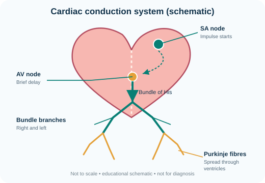
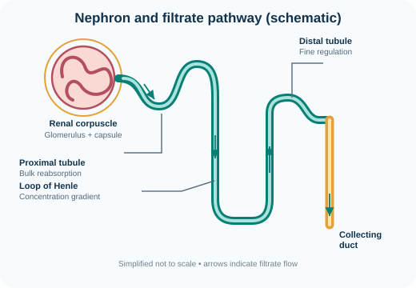

General & Descriptive Anatomy
History, terminology, position, planes, directions, regions, cavities, divisions, lines, landmarks and anatomical variation.
A focused academic resource center for anatomy and physiology learners — from foundational concepts to clinical connections, revision and self-assessment.
The resource centre is organised as a learning journey: learn the language of anatomy first, understand normal structure, then connect structure with function, development, imaging and clinical practice.
History, terminology, position, planes, directions, regions, cavities, divisions, lines, landmarks and anatomical variation.
Regional, systemic and surface anatomy; bones, joints, muscles, viscera, vessels, nerves and relationships between structures.
Cytology and histology: cells, organelles, epithelium, connective tissue, cartilage, bone, muscle, nerves and organ microstructure.
Brain, spinal cord, meninges, ventricles, cranial nerves, spinal nerves, tracts, autonomic pathways and functional localisation.
Gametes, fertilisation, implantation, germ layers, folding, organogenesis, placenta, fetal circulation and congenital anomalies.
Palpable landmarks, anatomical lines, projections, sectional anatomy and interpreting X-ray, CT, MRI and ultrasound orientation.
Cell physiology, homeostasis, nerve and muscle, blood, cardiovascular, respiratory, renal, digestive, endocrine and reproductive function.
Use anatomical relationships to understand examination, injury patterns, imaging, common clinical signs and procedural principles.
This is an expanding curriculum, not a claim that every university syllabus is identical. Lesson depth and coverage will continue to grow in stages.
Build a strong foundation, connect structures to their functions, and revisit key concepts as you prepare for examinations and clinical training.
Regional anatomy, bones, joints, muscles, organs and spatial relationships.
Central and peripheral nervous systems, cranial nerves and neural pathways.
Understand how cells, tissues, organs and systems work together.
Cellular organisation, tissues, membranes and microscopic structure.
Relate core science to examination findings and common clinical principles.
Practise retrieval, check understanding and revisit difficult concepts.
Search by topic or filter by discipline. Open a lesson for its core explanation, high-yield points and clinical connection.
Use original, purpose-made diagrams to practise anatomical orientation and key relationships. These are schematic teaching illustrations, not diagnostic images or to-scale anatomical plates.

Trace the normal electrical impulse through the conducting system and connect it to coordinated atrial and ventricular contraction.
Answer: Sinoatrial (SA) node → atrial myocardium → atrioventricular (AV) node (physiological delay) → atrioventricular bundle (bundle of His) → right and left bundle branches → Purkinje fibres → ventricular myocardium.
Clinical link: Conduction blocks can alter the timing or route of ventricular activation and may change the ECG.
Artwork: Anatomistvitalis Academic Resource Center, original SVG created for this site (2026). No third-party image used.

Follow filtrate from the renal corpuscle through the tubules, then relate each segment to filtration, reabsorption, secretion and urine concentration.
Answer: Filtration occurs across the glomerular filtration barrier from glomerular capillaries into Bowman's (glomerular) space. The filtrate then enters the proximal convoluted tubule.
Clinical link: Damage to the filtration barrier may allow abnormal amounts of protein or blood cells to appear in urine; interpretation requires appropriate clinical testing.
Artwork: Anatomistvitalis Academic Resource Center, original SVG created for this site (2026). No third-party image used.
Answer each question, read the explanation and use the feedback to guide your next revision session.
Completed lessons are saved in this browser on this device. Clearing browser data or changing devices may remove or reset this local progress.
Open a lesson and mark it complete to start tracking your learning.
These free resources provide deeper chapter-by-chapter coverage. The site’s explanations are written for guided learning and should be cross-checked with your course syllabus and current authoritative references.
External resources remain the property of their respective authors and publishers. Consult each source’s current licence and attribution requirements before reusing its text or images.
Get in touch about learning resources, corrections, collaboration or suggestions for future lessons.
For academic enquiries, corrections and resource suggestions.
ibineolaraphael@gmail.comContact the resource centre by phone.
+234 906 909 6197
Learn with Anatomistvitalis.
Follow Anatomistvitalis for anatomy explainers, video lessons, revision prompts and updates from the Academic Resource Center.
X / Twitter
Short learning notes, new-resource announcements and discussion prompts.
Follow on X ↗YouTube
Video explanations, practical demonstrations and guided revision from the channel.
Visit YouTube channel ↗Facebook
Community updates, educational posts and opportunities to continue the discussion.
Visit Facebook page ↗Choose a channel to open the supplied public profile. A featured video will be added when you provide its direct YouTube video link.